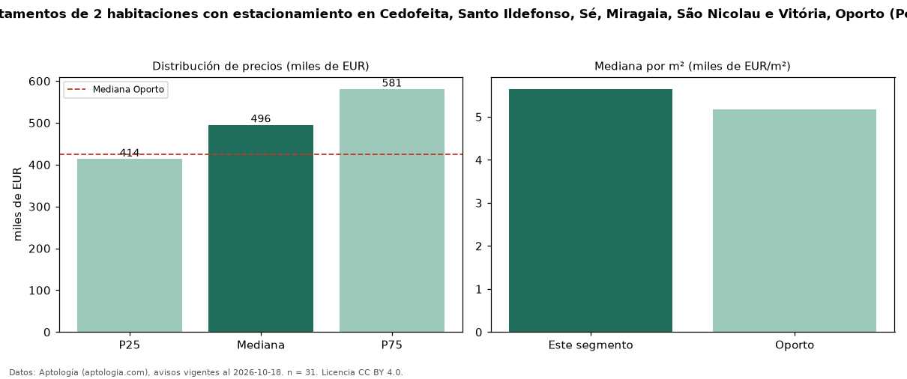

Precio de venta de apartamentos de 2 habitaciones con estacionamiento en Cedofeita, Santo Ildefonso, Sé, Miragaia, São Nicolau e Vitória, Oporto (Portugal) — octubre 2026
En Cedofeita, Santo Ildefonso, Sé, Miragaia, São Nicolau e Vitória, Oporto (Portugal), la mediana de precio de venta de apartamentos de 2 habitaciones con estacionamiento es EUR 495.500, según 31 avisos vigentes. Prácticamente coincide con la mediana de los apartamentos de 2 habitaciones en venta de Cedofeita, Santo Ildefonso, Sé, Miragaia, São Nicolau e Vitória (EUR 490.000, n = 61); este segmento reúne el 51 % de esos avisos. Por metro cuadrado, la mediana es EUR 5.647/m² (n = 31), 0 % por encima de los apartamentos de 2 habitaciones en venta de Cedofeita, Santo Ildefonso, Sé, Miragaia, São Nicolau e Vitória (EUR 5.647/m²). El área mediana anunciada es 85 m². La mediana de todos los apartamentos en venta de Oporto es EUR 425.000 (+17 % de diferencia). La mitad central de los avisos va de EUR 413.950 a EUR 581.000 (razón 1,4), una dispersión moderada. Datos: Aptología (aptologia.com), CC BY 4.0 — https://www.aptologia.com/pt/venda/porto/cedofeita-santo-ildefonso-se-miragaia-sao-nicolau-e-vitoria. Archivos: PDF, CSV con las cifras y gráfica PNG.

| Avisos únicos | 31 |
|---|---|
| Percentil 25 | COP 413.950 |
| Mediana | COP 495.500 |
| Percentil 75 | COP 581.000 |
| Mediana por m² | COP 5.647 |
Fuente: avisos vigentes de portales inmobiliarios recopilados por Aptología, deduplicados (mínimo 30 avisos únicos por celda). Precios pedidos, no cerrados. Fecha: 2026-10-18.